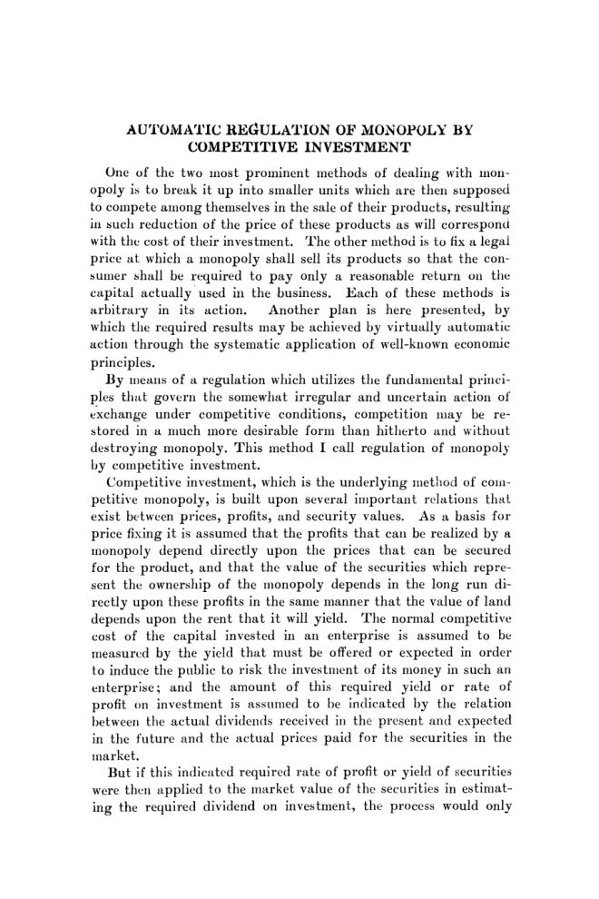

Blue, 1915: o preço do monopólio fixado pelo mercado de capitais
Leitura: 8 min
F. K. Blue propõe deixar o monopólio intacto e fixar seu preço pela taxa de retorno que os investidores aceitam nos títulos da própria empresa, aplicada a um valor fixo do capital investido.


Em 1915, os Estados Unidos lidavam com o monopólio de dois modos. Um era dividi-lo em unidades menores, que deveriam competir entre si até que o preço do produto correspondesse ao custo do investimento. O outro era fixar por lei um preço que desse ao monopolista apenas um retorno razoável sobre o capital efetivamente usado. F. K. Blue, em oito páginas da American Economic Review de junho, chama os dois métodos de arbitrários e propõe um terceiro, que funcionaria de modo praticamente automático.
O nome que ele dá ao método é regulação do monopólio por investimento competitivo. A ideia é conservar o monopólio, mas restaurar a concorrência num ponto anterior do processo produtivo: não na venda do produto, onde ela é na melhor das hipóteses imperfeita, e sim no fornecimento de capital à empresa, onde, diz o autor, ela pertence mais propriamente.
Em que relações o método se apoia?
Blue parte de três relações. O lucro de um monopólio depende diretamente dos preços que ele consegue cobrar. O valor dos títulos que representam a propriedade do monopólio depende, no longo prazo, desses lucros, do mesmo modo que o valor da terra depende da renda que ela produz. E o custo normal do capital é medido pelo rendimento que é preciso oferecer para que o público arrisque seu dinheiro no negócio, rendimento que se lê na relação entre os dividendos, recebidos e esperados, e o preço pago pelos títulos no mercado.
O autor vê o problema da circularidade. Se a taxa de retorno indicada pelo mercado fosse aplicada ao próprio valor de mercado dos títulos, o processo andaria em círculo: preços altos produziriam lucros altos, que elevariam a cotação, que justificaria preços altos. Por isso a taxa deve ser aplicada a um valor fixo do investimento, estabelecido de uma vez pelo dinheiro efetivamente gasto na construção do negócio, por avaliação ou de outro modo.
Como o preço seria calculado?
A Suprema Corte, lembra Blue, garantia às empresas um “retorno justo sobre um valor justo” do investimento. Seu método define os dois termos. A taxa de retorno permitida é a razão entre a parcela normal estimada para dividendos futuros e a cotação média dos títulos no ano anterior. Essa taxa, aplicada ao valor fixado do investimento, dá o montante que se soma aos custos de operação para formar o preço do produto ou do serviço no ano seguinte.
O resultado é que a empresa, na prática, fixa a taxa de retorno de seus próprios títulos ao escolher o preço pelo qual os oferece no mercado aberto, em concorrência com o retorno pelo qual o público está disposto a fornecer capital. Quanto mais altas as ofertas pelos títulos, menor a taxa indicada e menor o preço do produto. A cotação, por sua vez, nunca poderia se afastar muito do valor fixado do investimento.
“Os preços seriam efetivamente fixados pela concorrência no mercado de dinheiro.” (“prices would actually be fixed by competition in the money market”)
E se os acionistas manipulassem a cotação?
Para impedir que a cotação fosse manipulada, os valores usados na média anual seriam as menores ofertas diárias de venda que não encontraram comprador. Se os acionistas pedissem caro demais e nada fosse vendido, a taxa de retorno indicada cairia, e com ela a parcela de dividendos e o preço do produto. Se tentassem obter uma taxa alta oferecendo os títulos barato demais, arriscariam ver a oferta aceita e perder parte da participação, e nesse caso o lance baixo nem seria contado.
Há ainda uma compensação entre anos. O excesso de lucro decorrente de um preço alto num ano seria contado para reduzir o preço no ano seguinte, e o déficit de um preço baixo, para aumentá-lo. Sabendo disso, ninguém pagaria pelos títulos muito mais que o valor normal, e a confiança se manteria nos anos de lucro magro. Os títulos de uma empresa assim regulada ficariam, diz o autor, numa situação comparável à de suas obrigações, e a publicidade das contas tornaria inútil a especulação de quem tem informação interna.
Onde fica o incentivo à eficiência?
Blue considera esse o teste decisivo de qualquer método econômico. Sob concorrência, a recompensa pela eficiência tende a se perder assim que um rival aprende o segredo. Sob monopólio, as melhorias costumam ser capitalizadas, criando rendas perpétuas para quem não as ganhou, e a administração passa a se ocupar mais da especulação com os títulos que da economia na produção.
Como o custo usado no preço é uma média de anos passados, a empresa que reduz custos fica com a diferença por algum tempo, até que a redução entre na média e passe ao consumidor. Assim, argumenta o autor, seria possível separar os ganhos devidos à iniciativa e à eficiência dos ganhos devidos ao privilégio, e atribuir os primeiros a administradores, capitalistas ou trabalhadores pelo prazo que o interesse público determinasse.
Que objeções o autor enfrenta?
A primeira é a de que, se a regulação se generalizasse, desapareceria a base para medir o retorno razoável, porque não haveria mais títulos livres com que comparar. No método arbitrário, a taxa normal é estimada a partir de títulos semelhantes não regulados. No investimento competitivo, cada título forneceria sua própria taxa, calculada pela razão entre os dividendos estimados e a cotação do ano. A base, conclui, não se perderia mesmo que o método fosse universal.
A segunda é a das ampliações. Com o preço reduzido a um retorno justo, os títulos emitidos para financiar extensões, que no começo rendem menos que o normal, não poderiam ser vendidos a um preço que cobrisse o retorno exigido, e o prejuízo recairia sobre os acionistas. Por isso eles pediriam tarifas acima do justo. No método automático, os déficits temporários das ampliações seriam compensados depois, e as ferrovias, por exemplo, poderiam vender novos títulos a preços razoáveis sem aumentos arbitrários de tarifas.
Sobre os salários, o efeito direto seria pequeno: salários deprimidos pelo monopólio poderiam subir ao normal, e as disputas diminuiriam porque o ajuste automático dos preços impediria que a perda de lucro causada por um aumento salarial fosse permanente. O poder de compra de todos os salários subiria na medida em que preços inflados pelo monopólio voltassem ao normal. O autor termina com uma ressalva própria: nada indica que o método afetaria, por si só, as causas do desemprego ou daria a todos igual oportunidade de ganhar a vida.
O artigo deixa de fora a descrição matemática completa. Blue explica, numa nota, que o espaço não permitia expô-la e se oferece para enviar o método detalhado a qualquer leitor interessado.
Na minha leitura
Na minha leitura, o interesse da proposta está na pergunta que ela faz, mais do que no mecanismo. Toda regulação por retorno sobre o capital precisa de dois números, o valor da base e a taxa permitida, e Blue tenta tirar o segundo do julgamento do regulador e entregá-lo ao mercado, enquanto congela o primeiro para evitar a circularidade entre preço, lucro e cotação. É a mesma dificuldade que a regulação de serviços públicos enfrenta ao estimar o custo de capital.
A média do custo unitário sobre vários anos é a parte mais duradoura do texto. Ela separa o lucro da eficiência do lucro da posição de monopólio e dá à empresa um prazo para se apropriar do primeiro, como uma patente. A regulação por preço-teto revisado em ciclos plurianuais trabalha com a mesma ideia: deixar a empresa ficar com os ganhos de produtividade por um período e repassá-los ao consumidor depois.
Glossário
- Investimento competitivo
- nome que Blue dá ao método de fixar o preço de um monopólio pela taxa de retorno aceita pelos investidores nos títulos da empresa.
- Retorno justo sobre um valor justo
- fórmula da Suprema Corte americana para o lucro permitido a empresas reguladas.
- Valor do investimento
- base fixa de capital, estabelecida pelo dinheiro efetivamente aplicado ou por avaliação, à qual se aplica a taxa de retorno.
- Capitalizar um ganho
- incorporar ao valor dos títulos uma renda esperada, de modo que ela passe a ser exigida como retorno normal.
- Custo unitário médio
- custo de operação por unidade, calculado como média de vários anos anteriores.
Fontes
- Automatic Regulation of Monopoly by Competitive Investment — F. K. Blue (pp. 303–310). JSTOR · Internet Archive (PDF)
- Edição completa, com os demais artigos: Nº 136 do Arquivo.
Documento em domínio público (EUA, publicado antes de 1931), via JSTOR Early Journal Content e Internet Archive. Resumo e comentário do autor deste site, sem afiliação com a American Economic Association. Encontrou um erro? Escreva: a correção é publicada no próprio texto, com data.
← Fisher, 1915: quem ficava fora da indenização por acidente ↑ Nº 136 · Quem a indenização protege, a cooperativa dos merceeiros e o monopólio